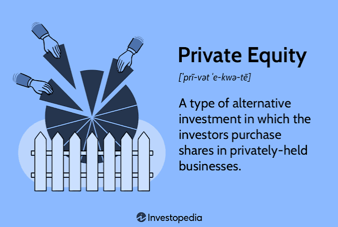

Private Equity (PE)
Explore Leveraged Buyouts (LBOs), deal sourcing, operational turnarounds, and private market investment structures.

Private Equity is a buy-side investment strategy that involves acquiring companies using significant debt financing (Leveraged Buyouts), improving their operations, and selling them for a profit. Private equity professionals create value through operational improvements, multiple expansion, and financial engineering.
The role requires strong financial modeling skills, strategic thinking, and the ability to evaluate business operations and management teams. Private equity is one of the most prestigious and competitive career paths in finance.
Core Functions
Private equity professionals raise capital from institutional investors (Limited Partners), identify acquisition targets, conduct due diligence, execute LBOs, manage portfolio companies, and exit through sale or IPO. They are involved in every stage of the investment lifecycle.
The work involves sourcing and evaluating potential investments, structuring and executing transactions, and working with portfolio company management to drive operational improvements. Private equity professionals must think like owners, because they are.
• Capital Raising: Securing LP fund commitments from pension funds and endowments.
• Deal Sourcing & Diligence: Evaluating target business operations, financials, and management.
• Portfolio Operations & Exit: Partnering with executives to drive growth before selling via M&A or IPO.
The LBO Strategy
The LBO Strategy involves acquiring companies using a mix of debt and equity (often 60-90% debt). The acquired company's cash flows are used to repay the debt, and value is created through operational improvements, multiple expansion, and financial engineering.
By using significant debt, private equity firms can amplify returns on their equity investment. However, this also increases risk for the acquired company, which must generate sufficient cash flow to service the debt.
Acquisition Capital Structure = 60-90% Debt + 10-40% Sponsor Equity
Using company cash flow to pay down senior debt over 3-7 years exponentially increases equity returns upon exit.
The Investment Lifecycle
The Investment Lifecycle follows five stages:
Sourcing (finding deals) → Diligence (investigating the target) → Execution (closing the transaction) → Management (improving operations) → Exit (selling for a profit).
Each stage requires different skills and expertise. Sourcing requires a strong deal network and the ability to identify attractive opportunities. Diligence requires deep analytical skills to evaluate the target's financials and operations. Execution requires transaction expertise. Management requires operational insight. Exit requires timing and market knowledge.
1. Sourcing ➔ 2. Diligence ➔ 3. Execution ➔
4. Management ➔ 5. Exit
Career Progression
Analyst / Associate → Senior Associate → Vice President → Principal → Partner.
Promotion is based on deal execution, investment performance, and the ability to raise capital from investors.
Partners at top private equity firms earn substantial compensation through management fees and carried interest—a share of the profits from successful investments. Career progression can be highly competitive.
Analyst / Associate (LBO Modeling & Diligence) ➔ Senior Associate / VP
(Deal Execution & PortCo Oversight) ➔ Principal / Partner (Fundraising, Deal Sourcing &
Carried Interest Share)
📝 Practice Quiz & Submodule Check
Complete all questions to unlock Submodule 4.5Answer the multiple-choice questions below to test your understanding of Private Equity concepts.